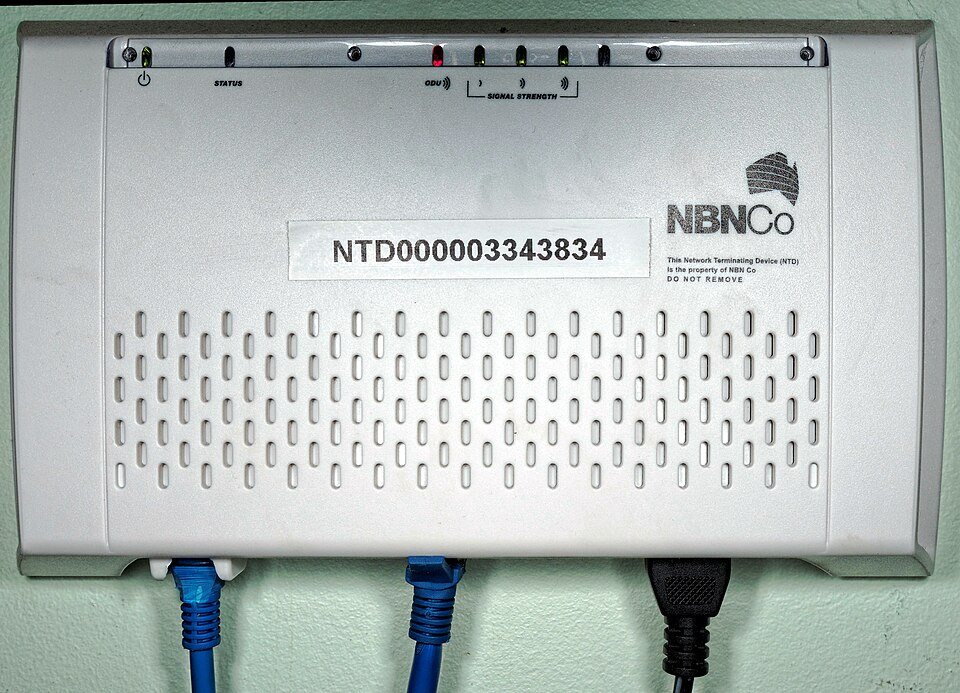
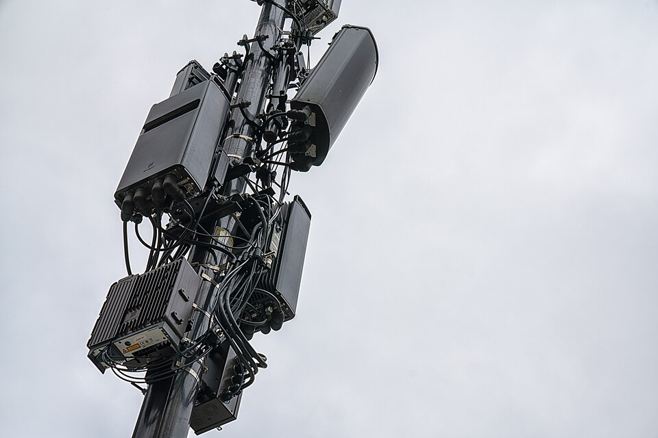

How broadband, mobile and voice services share a network
Follow the physical signal, link, IP connection and application. Use each test result to choose the next layer to check.
Follow a service in both directions
At home, a laptop or phone uses a local network to reach a router. The router connects through an access service into an operator's network. Aggregation brings many access connections together. From there, traffic can go to the retailer's equipment and then to other networks or services. For a mobile connection, the handset uses a local cell over radio, then the site connects to the operator's network over backhaul such as fibre or microwave.

Photo by Greg Lehey, resized with callouts. Original photo · CC BY-SA 4.0.


Photo by Tony Webster, resized with callouts. Original photo · CC BY 2.0.

| Access type | Last segment | Equipment to recognise |
|---|---|---|
| Fibre to the premises | Optical fibre to a connection box | ONT or NTD at the customer end. A passive optical network can share an optical line terminal (OLT) port through a splitter. |
| Hybrid fibre coaxial | RF over 75 Ω coaxial cable | A cable modem uses DOCSIS channels between the premises and network equipment serving multiple customers. |
| Mobile and fixed wireless | Radio link to a cell | A subscriber device, site radio and antenna, and a backhaul link from the site. |
| Fibre to the node | Copper pair from the node, using VDSL | A street node and a VDSL modem. The distribution architecture varies by access type. |
Some boxes combine functions. A unit sold as a modem-router can terminate the access medium, route IP and provide Wi-Fi. Identify the function from its port labels and model documentation. nbn access-technology guides · Watch an nbn fibre installation.
Test the layer that answers your question
| Layer or state | Successful test | What you can conclude |
|---|---|---|
| Physical path | Optical power is within the receiver's specified window. | Light reaches that receiver under these test conditions. Next check whether the expected link comes up. |
| Local link | Switch and device agree the Ethernet link is up. | The ports have established link. The intended VLAN and the IP configuration are separate checks. |
| Address and route | The client reaches a known IP endpoint over the intended path. | There is a working route for that test. Next test name resolution and the actual application. |
| Service | A representative transaction completes in both directions. | The tested service works for that user and case, including the required return path. |
A separate management interface can answer while the service port has failed. A modem may see signal but still fail registration. The scope of an outage helps distinguish failure of a shared segment from a single client or service. Compare a known working neighbour in the network diagram before changing equipment.
Read units before comparing numbers
Optical dBm represents absolute power referenced to 1 mW. Loss in dB is a ratio. A trainer with −4 dBm transmit power and 5 dB of path loss receives approximately −9 dBm. Compare against the receiver's sensitivity and overload limits. Read P53 for the full loss budget.
DOCSIS dBmV is a voltage level referenced to 1 mV. Downstream power is received by the modem, while upstream power is what the modem transmits. SNR in dB is a signal-to-noise ratio. Compare equivalent channels and equipment states. A multimeter on disconnected coax can check opens and shorts. RF impedance and channel signal quality require RF test equipment. ARRIS signal-level guide.
RSRP in dBm is the received power of a specified cellular reference signal. RSRQ in dB indicates reference signal quality. SINR in dB compares wanted signal with interference and noise. On the same handset and technology, −94 dBm is stronger than −107 dBm. Stronger power can accompany poorer signal quality or an overloaded service. LTE and 5G NR readings can use different references. Android signal-strength reference.
Separate a call from the audio it carries
SIP can register a phone and establish or end a call. A session description (SDP) conveys media addresses, ports and supported formats. RTP commonly carries the audio. A gateway or call server can create separate signalling and media legs. A call can ring and connect even if only one direction of audio gets through. Check the capture position, expected receive address and observed media for each leg. SIP specification · RTP specification.
Your router responds over Ethernet and its WAN light is on, but two devices cannot open a website. What does each observation prove? Pick two further checks that distinguish address or routing failure from name resolution or application failure.
Apply the tests in broadband service triage, shared outage triage, mobile service measurements, voice call diagnosis or HFC coax diagnosis.